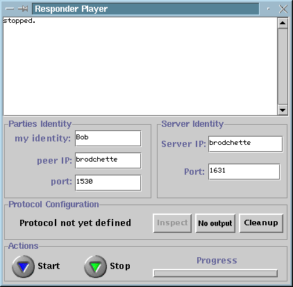

Responder Player
The responder player is the party who responds to a request
for the execution of a quantum protocol. It connects to both the responder
server and the initiator player. From
the latter it receives the description of a protocol to be executed together
with the configuration. If the responder player accepts the request then
the protocol starts executing. The responder player must be launched
after the initiator player since it connects
to it. When launched, the responder player looks like
that:

The initiator player window contains 4 groups of items
as follow:
Parties Identity:
-
My identity is a string for the identification of
the initator player. The initiator player is usually called Alice in the
litterature but anything can do.
-
Server IP is the IP address of the responder
server.
-
port is the port number at which the responder player
connects to the initiator player. The
responder player should therefore be launched after the initiator
player.
Server Identity:
Protocol Configuration:
-
Protocol's label indicates the protocol selected by
the initiator player and agreed upon. The selected protocol is one
among a list of supported protocols. This
label always indicates protocol not yet defined when it is switched
off.
-
Inspect button allows to see the values set for all
parameters of the protocol agreed with the initiator
player. This does not allow to modify the parameters.
-
Output selection button allows to set or unset the
HTML output generation. When the button indicates No Output then
no output will be generated after the execution. When the button indicates
HTML
output then the output of the next execution will be available from
index file of the previously
selected template directory. The valid template directory provided
with the software is located in qrypto/templates/responder
for the initiator player's outpout.
-
Clean up button allows to remove some executions from
the index file of the
selected template directory for HTML output generation.
Actions:
-
start/stop button initiates and stops action. Start
must be pressed after the protocol has been selected and configured.
It does the following:
-
Connect to the initiator player,
-
Wait for the protocol description and the configuration,
it accepts or rejects the received configuration,
-
Upon acceptance, it connects to the responder server and
transmits the requested quantum transmission according to the protocol
selection,
-
The protocol is executed.
-
After the execution the player stops automatically.
-
progress bar indicates the progress and the
protocol phase currently executed.